library(naturecounts)
library(dplyr) # For manipulating data frames
library(patchwork) # For combining plots
library(ggplot2) # For plotting the gridGetting started
These tools, cosewic_ranges() and
cosewic_plot(), are designed to help with spatial
calculations for COSEWIC assessments, namely calculations of the EOO and
IAO (seecosewic_ranges() for more details on these
calculations).
You can calculate both IAO and EOO with the
cosewic_ranges() function and you can use the
cosewic_plot() function to create figures of these
values.
In the next few examples, we’ll use a built in dataset
bcch. In your own workflows, you would replace this with
your own data (see Using your own
data).
Calculating IAO and EOO
First we’ll calculate the ranges using default arguments and call
r.
r <- cosewic_ranges(bcch)Look at this data by printing the r object. This shows
us that the r object is a list with two items:
-
iaowhich is a simple features collection (sf or spatial dataframe), and -
eoowhich is also an sf or spatial data frame.
r
#> $iao
#> Simple feature collection with 475 features and 11 fields
#> Geometry type: POLYGON
#> Dimension: XY
#> Bounding box: xmin: 1407460 ymin: 785222 xmax: 1537823 ymax: 867036.6
#> Projected CRS: Canada_Albers_Equal_Area_Conic
#> # A tibble: 475 × 12
#> species_id n_records_total grid_id n_records min_record max_record
#> <int> <int> <int> <int> <int> <int>
#> 1 14280 160 1 0 1 35
#> 2 14280 160 2 0 1 35
#> 3 14280 160 3 0 1 35
#> 4 14280 160 4 0 1 35
#> 5 14280 160 5 0 1 35
#> 6 14280 160 6 0 1 35
#> 7 14280 160 7 0 1 35
#> 8 14280 160 8 0 1 35
#> 9 14280 160 9 0 1 35
#> 10 14280 160 10 0 1 35
#> median_record grid_size_km n_occupied iao prop_include
#> <int> [km] <int> [km^2] <dbl>
#> 1 1 2 33 132 1
#> 2 1 2 33 132 1
#> 3 1 2 33 132 1
#> 4 1 2 33 132 1
#> 5 1 2 33 132 1
#> 6 1 2 33 132 1
#> 7 1 2 33 132 1
#> 8 1 2 33 132 1
#> 9 1 2 33 132 1
#> 10 1 2 33 132 1
#> # ℹ 465 more rows
#> # ℹ 1 more variable: geometry <POLYGON [m]>
#>
#> $eoo
#> Simple feature collection with 1 feature and 4 fields
#> Geometry type: POLYGON
#> Dimension: XY
#> Bounding box: xmin: 1415235 ymin: 792053.4 xmax: 1535250 ymax: 866555.2
#> Projected CRS: Canada_Albers_Equal_Area_Conic
#> # A tibble: 1 × 5
#> species_id n_records_total
#> <int> <int>
#> 1 14280 160
#> x eoo prop_include
#> <POLYGON [m]> [km^… <dbl>
#> 1 ((1426543 792053.4, 1415235 866555.2, 1490367 845020.1, 15… 4729. 1You can access either of these items with the $ to pull
out just what you’re interested in.
r$eoo
#> Simple feature collection with 1 feature and 4 fields
#> Geometry type: POLYGON
#> Dimension: XY
#> Bounding box: xmin: 1415235 ymin: 792053.4 xmax: 1535250 ymax: 866555.2
#> Projected CRS: Canada_Albers_Equal_Area_Conic
#> # A tibble: 1 × 5
#> species_id n_records_total
#> <int> <int>
#> 1 14280 160
#> x eoo prop_include
#> <POLYGON [m]> [km^… <dbl>
#> 1 ((1426543 792053.4, 1415235 866555.2, 1490367 845020.1, 15… 4729. 1The values you are likely to be especially interested in are the
iao and the eoo columns within these spatial
dataframes
r$iao$iao[1]
#> 132 [km^2]
r$eoo$eoo[1]
#> 4728.589 [km^2]Also of interest is the prop_include column in each set
of data. This remindes you of the proportion of original data points
retained in the calculations (i.e. prop_include = 1 is
100%). You can change the proportion of points included to omit outliers
if you like by modifiying the prop_include argument in
cosewic_ranges().
By default all points are included, so make sure you’re confident that those points are accurate!
If this is too much information, omit the spatial data from the range calculations.
cosewic_ranges(bcch, spatial = FALSE)
#> # A tibble: 1 × 10
#> species_id n_records_total min_record max_record median_record grid_size_km
#> <int> <int> <int> <int> <int> [km]
#> 1 14280 160 1 35 1 2
#> n_occupied iao eoo prop_include
#> <int> [km^2] [km^2] <dbl>
#> 1 33 132 4729. 1Plotting IAO and EOO
By default, cosewic_ranges() includes the spatial data
so we can easily create figures of these ranges.
r <- cosewic_ranges(bcch)
cosewic_plot(r, title = "Black-capped Chickadee")
#> Zoom: 9
#> Fetching 9 missing tiles
#> | | | 0% | |======== | 11% | |================ | 22% | |======================= | 33% | |=============================== | 44% | |======================================= | 56% | |=============================================== | 67% | |====================================================== | 78% | |============================================================== | 89% | |======================================================================| 100%
#> ...complete!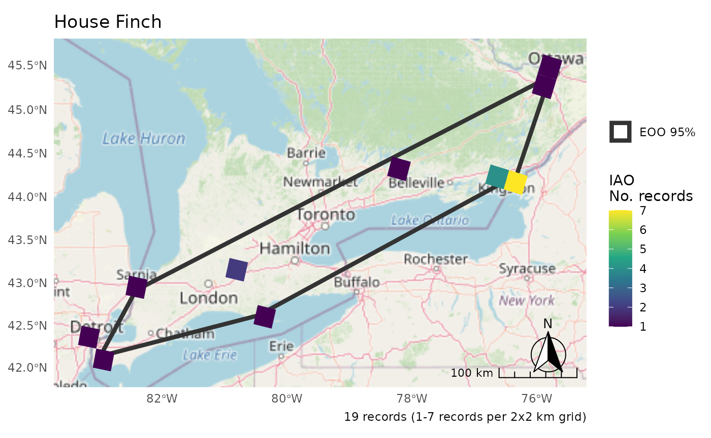
Remember: By default we use map tiles from OpenStreetMap (
map = "osm"). If you are using these figures in a public document/website/etc., you must attribute OpenStreetMap.
You can try any map tile listed in rosm::osm.types(),
but note that not all may work for your region and many require an API
key.
r <- cosewic_ranges(bcch)
cosewic_plot(r, map = "cartolight", title = "Black-capped Chickadee")
#> Zoom: 9
#> Fetching 9 missing tiles
#> | | | 0% | |======== | 11% | |================ | 22% | |======================= | 33% | |=============================== | 44% | |======================================= | 56% | |=============================================== | 67% | |====================================================== | 78% | |============================================================== | 89% | |======================================================================| 100%
#> ...complete!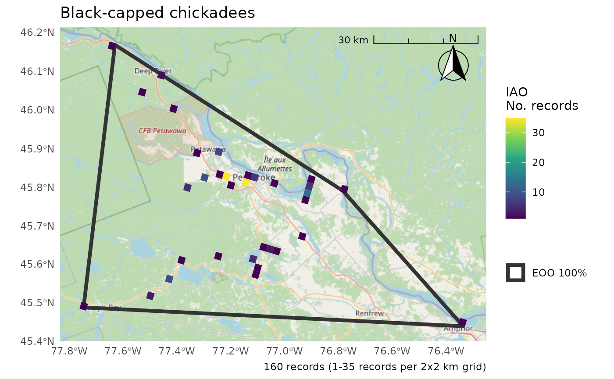
Using your own data
To use your own data in the cosewic_ranges() function,
you must load a data set of observations into R. This dataset must have
an ID column and columns defining latitude and longitude, and
optionally, a grouping column.
Let’s load the example black-capped chickadee file included in
naturecounts. We’ll use the system.file() function to find
the path to the csv file.
# Assign the path or location
path <- system.file("extdata", "bcch.csv", package = "naturecounts")
path
#> [1] "/home/runner/work/_temp/Library/naturecounts/extdata/bcch.csv"For your data, you’ll a path something like
path <- "location/of/my/data.csv" depending where your
data is stored. See the R
for Data Science chapter on Data import for more details.
Now we’ll read the data and take a quick look.
bc <- read.csv(path)
head(bc)
#> id lat lon n
#> 1 968039498 45.51110 -77.50533 1
#> 2 968039557 45.63436 -77.07484 1
#> 3 968039593 45.82732 -77.12012 1
#> 4 968039612 45.48730 -77.74651 2
#> 5 968039703 45.61956 -77.23577 2
#> 6 968039959 45.82851 -77.11430 3To use this in cosewic_ranges() we’ll tell the function
how to interpret these columns. By default the function expects these
columns to be record_id, latitude and
longitude, so if they are different we need to specify what
they are. In our example we also specify group = NULL to
tell the function that we’re not using a grouping column.
r <- cosewic_ranges(
bc,
record = "id",
coord_lat = "lat",
coord_lon = "lon",
group = NULL
)Working with multiple DUs (Designatable Units)
Let’s assume we have two populations or Designatable Units which we
would like to work with. We’ll use the built in pops data
set for this.
head(pops)
#> record_id latitude longitude population
#> 1 968039498 45.51110 -77.50533 Population 1
#> 2 968039557 45.63436 -77.07484 Population 1
#> 3 968039593 45.82732 -77.12012 Population 1
#> 4 968039612 45.48730 -77.74651 Population 1
#> 5 968039703 45.61956 -77.23577 Population 1
#> 6 968039959 45.82851 -77.11430 Population 1Because we have multiple groups, we’ll use the
group = "population" option to tell the function which
column contains the groups. Then calculations are performed separately
for each group.
r <- cosewic_ranges(pops, group = "population")
r$eoo
#> Simple feature collection with 2 features and 4 fields
#> Geometry type: POLYGON
#> Dimension: XY
#> Bounding box: xmin: 1081628 ymin: 336781.2 xmax: 1578702 ymax: 866555.2
#> Projected CRS: Canada_Albers_Equal_Area_Conic
#> # A tibble: 2 × 5
#> population n_records_total
#> <chr> <int>
#> 1 Population 1 160
#> 2 Population 2 19
#> x eoo prop_include
#> <POLYGON [m]> [km^2] <dbl>
#> 1 ((1426543 792053.4, 1415235 866555.2, 1490367 845020.1, 1… 4729. 1
#> 2 ((1093717 336781.2, 1081628 348770.3, 1124206 429489, 157… 58194. 1And we get a list of plots, one for each group.
p <- cosewic_plot(r, group = "population")
p[[1]]
#> Zoom: 9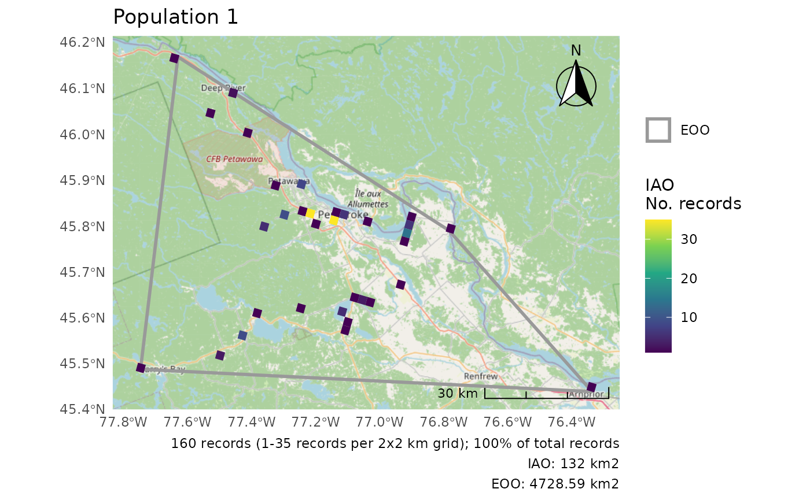
p[[2]]
#> Zoom: 6
#> Fetching 4 missing tiles
#> | | | 0% | |================== | 25% | |=================================== | 50% | |==================================================== | 75% | |======================================================================| 100%
#> ...complete!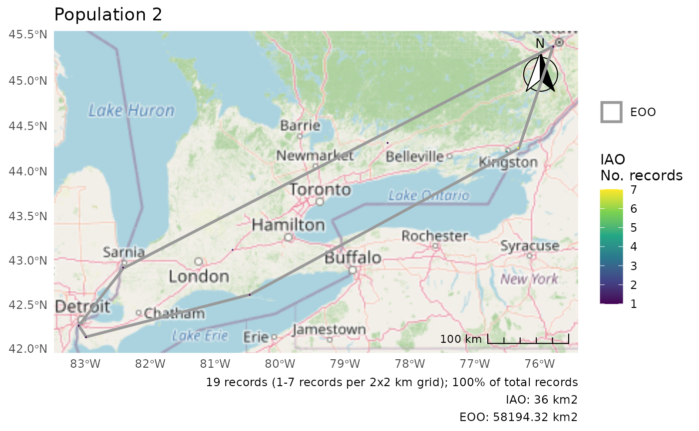
For a combined plot, we can use the wrap_plots()
function from the patchwork package to combine these figures.
wrap_plots(p)
#> Zoom: 9
#> Zoom: 6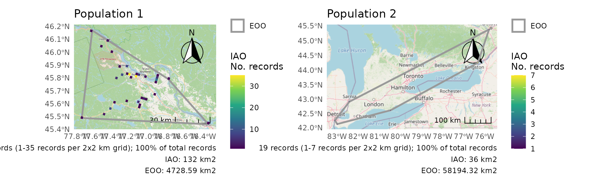
Using the COSEWIC’s IAO grid
By default, cosewic_ranges() constructs an IAO grid for
each analysis. This means that there might be small discrepancies in IAO
values calculated by naturecounts and those calculated with a different
grid. Even if the grids are the same size and with the same projection,
exactly where the bounds of the grid are may not be the same.
If this is of concern, you can supply your own IAO grid for these calculations, to ensure that there are no discrepancies.
First, use the sf package to read in your IAO grid. Here we’ll use a mini example IAO grid stored in the package
path <- system.file("extdata", "iao_bcch_grid.gpkg", package = "naturecounts")
path
#> [1] "/home/runner/work/_temp/Library/naturecounts/extdata/iao_bcch_grid.gpkg"
grid <- sf::st_read(path)
#> Reading layer `iao_bcch_grid' from data source
#> `/home/runner/work/_temp/Library/naturecounts/extdata/iao_bcch_grid.gpkg'
#> using driver `GPKG'
#> Simple feature collection with 3575 features and 1 field
#> Geometry type: POLYGON
#> Dimension: XY
#> Bounding box: xmin: 1406468 ymin: 786875.6 xmax: 1535250 ymax: 894738.5
#> Projected CRS: Canada_Albers_Equal_Area_ConicThis is what our example grid looks like
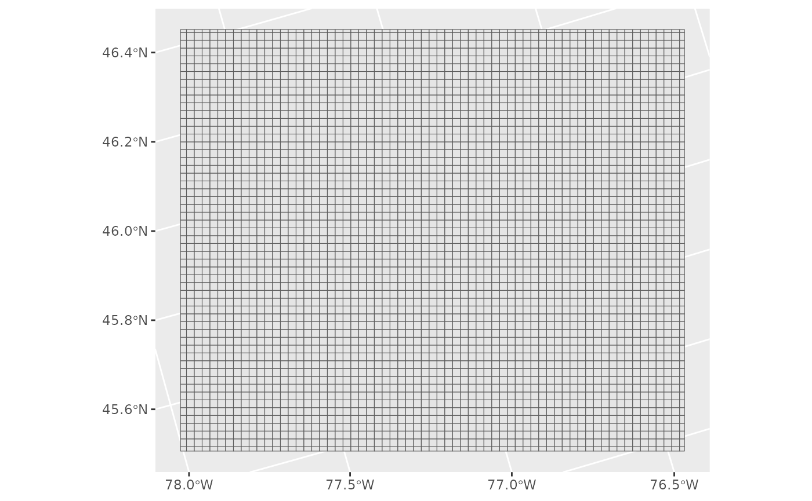
Next we’ll pass this as an argument to our
cosewic_ranges() function.
r <- cosewic_ranges(bcch, iao_grid = grid)
#> User-provided grid has cell size of 2 [km]And take a look at the figure of these calculations.
cosewic_plot(r)
#> Zoom: 9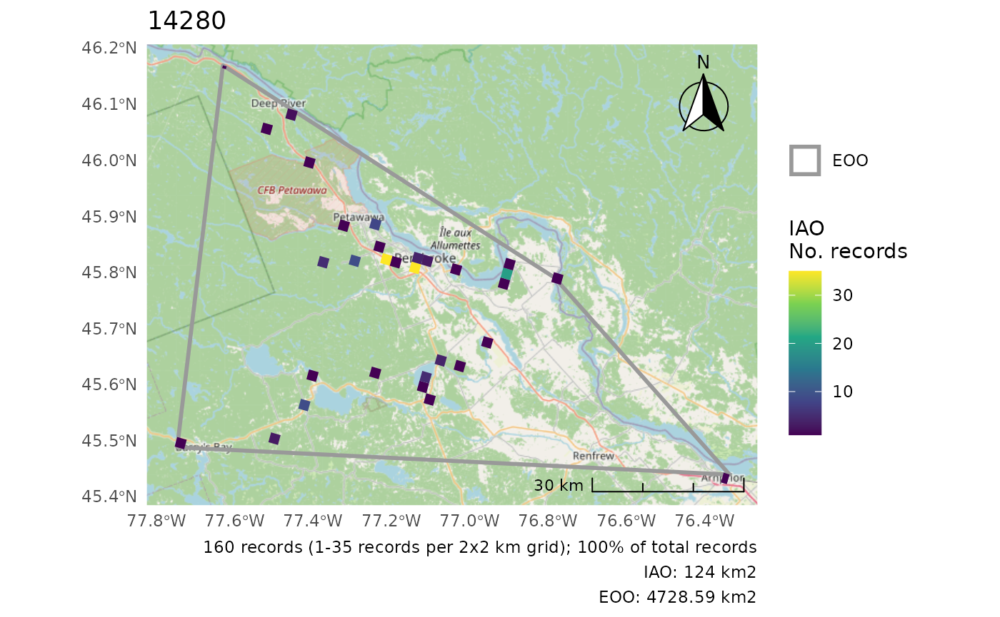
For comparison, note how the calculations are very slightly different
when using cosewic_ranges()’s default grid.
r0 <- cosewic_ranges(bcch)
cosewic_plot(r0)
#> Zoom: 9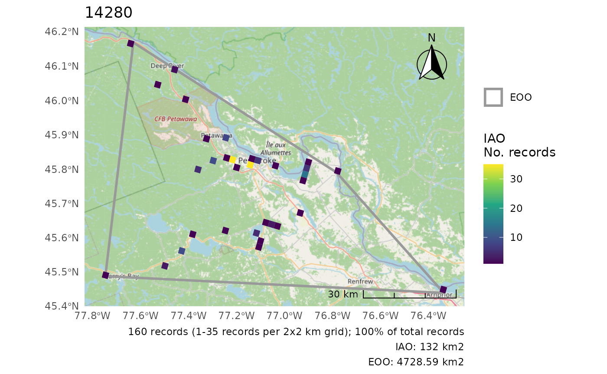
Appendix
Customizing Plots
These examples all use the bcch dataset.
r <- cosewic_ranges(bcch)Adding observation points
Note that this adds all observation points (regardless of whether some were omitted from the analyses).
cosewic_plot(r, points = bcch)
#> Zoom: 9Plot only either EOO or IAO
cosewic_plot(r, which = "eoo", points = bcch)
#> Zoom: 9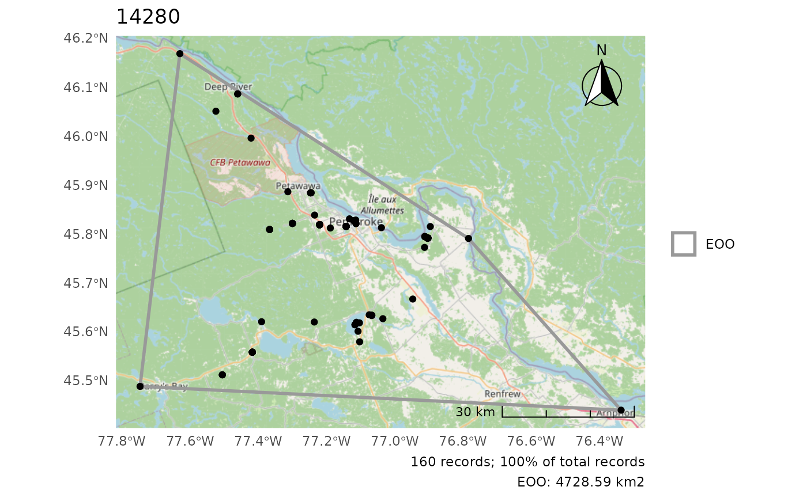
cosewic_plot(r, which = "iao")
#> Zoom: 9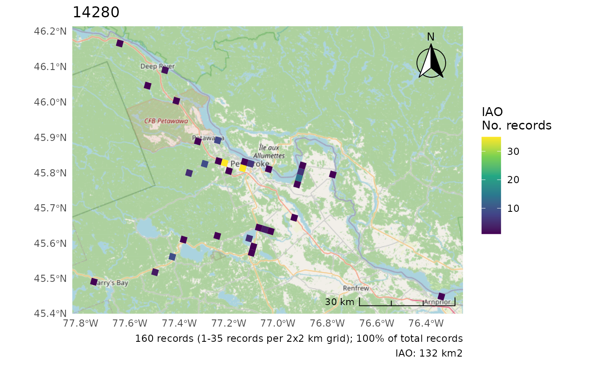
Change the CRS
Only applies if not using map tiles as map tile projections cannot be changed.
No change
cosewic_plot(r, crs = 3347)
#> 'crs' is only applicable when not using map tiles. Map tiles always use CRS of EPSG:3857.
#> Loading required namespace: raster
#> Zoom: 9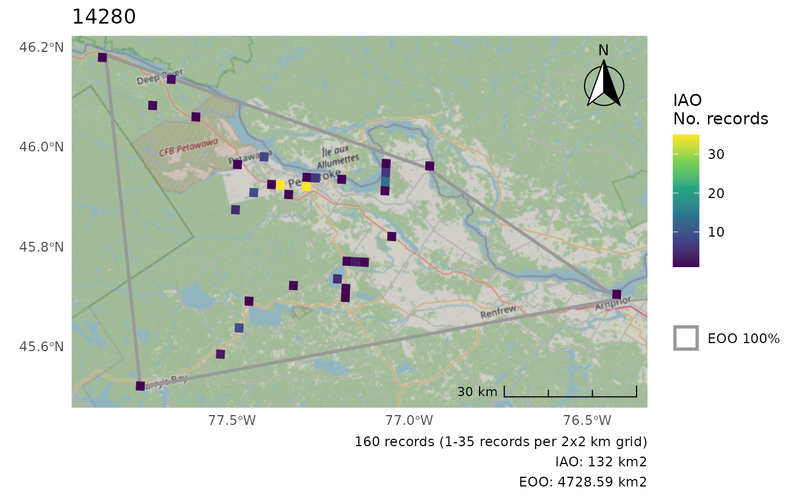
Using a custom polygon, we can change the CRS.
cosewic_plot(r, map = map_canada(), crs = 3347)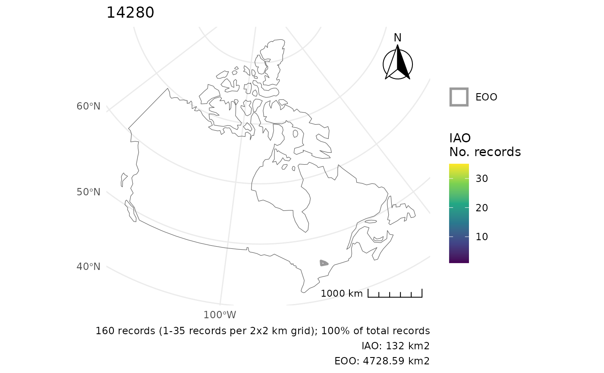
Move the scale/arrow
r <- cosewic_ranges(hofi)
cosewic_plot(r, arrow_location = "br", scale_location = "br")
#> Zoom: 6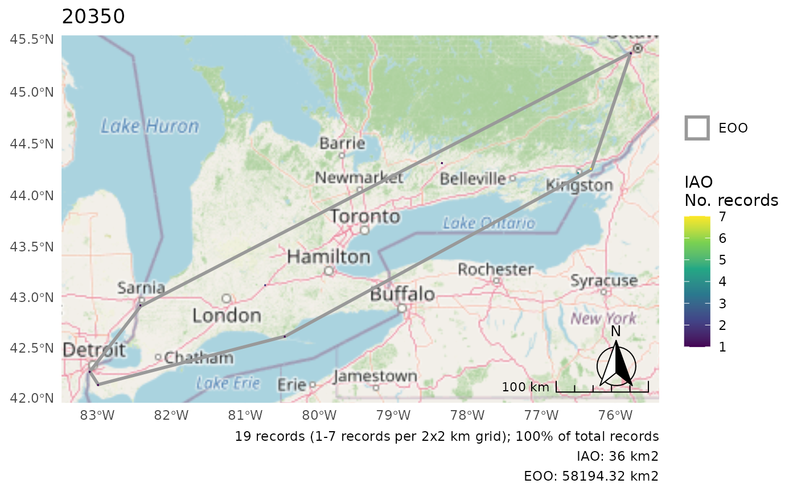
Summarize IAO over larger grid
When the cells are really small, it can be helpful to summarize over a larger grid for better visibility of the patterns.
cosewic_plot(
r,
grid = grid_canada(25),
title = "House Finch",
arrow_location = "br",
scale_location = "br"
)
#> Zoom: 6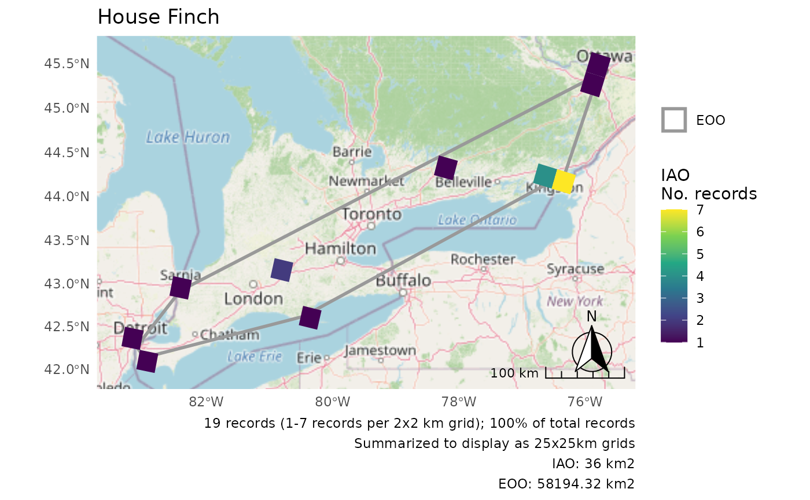
Customizing Multiple Plots
These examples all use the pops dataset.
r <- cosewic_ranges(pops, group = "population")Using IAO proportions
When plotting multiple DUs the IAO scales may be different enough that it would be better use IAO proportions rather than absolute values.
p <- cosewic_plot(r, group = "population", iao_prop = TRUE)
wrap_plots(p) +
plot_layout(guides = "collect")
#> Zoom: 9
#> Zoom: 6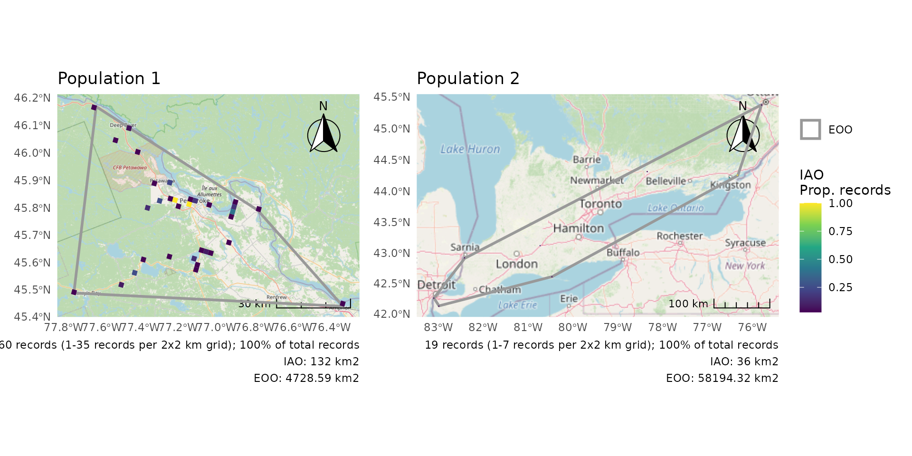
Summarize IAO over larger grid
As for single plots, when the cells are really small, it can be helpful to summarize over a larger grid for better visibility of the patterns.
p <- cosewic_plot(
r,
group = "population",
iao_prop = TRUE,
grid = grid_canada(10)
)
wrap_plots(p) +
plot_layout(guides = "collect")
#> Zoom: 9
#> Zoom: 6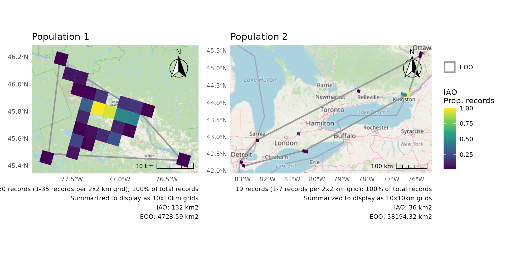
Combining separate plots
But for the ultimate control, create plots separately and then combine.
We’ll first split the two populations, but you could also load them separately if they are already split on your computer (see “Working with your own data”).
We’ll use group = "population to ensure correct
titles.
# Split the two populations
pops1 <- dplyr::filter(pops, population == "Population 1")
pops2 <- dplyr::filter(pops, population == "Population 2")
# Calculate the ranges separately
r1 <- cosewic_ranges(pops1, group = "population")
r2 <- cosewic_ranges(pops2, group = "population")
# Create separate plots
p1 <- cosewic_plot(r1, group = "population", iao_prop = TRUE)
p2 <- cosewic_plot(
r2,
group = "population",
iao_prop = TRUE,
grid = grid_canada(10)
)Now arrange your plots how you like.
p1 +
p2 +
plot_layout(guides = "collect") +
plot_annotation(title = "EOO and IAO for all Designatable Units")
#> Zoom: 9
#> Zoom: 6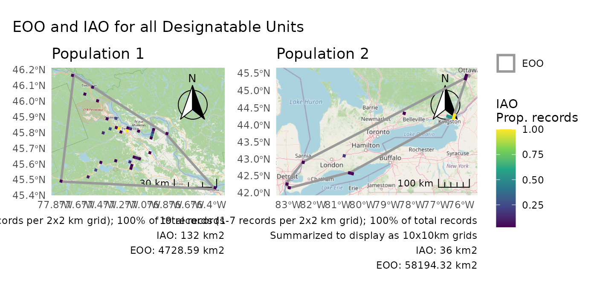
p1 /
p2 +
plot_layout(guides = "collect") +
plot_annotation(
title = "EOO and IAO for all Designatable Units",
subtitle = "2025 Assessment performed with naturecounts R package"
)
#> Zoom: 9
#> Zoom: 6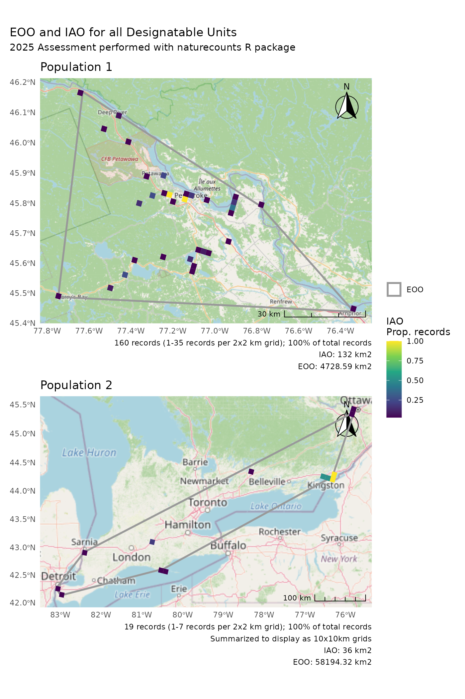